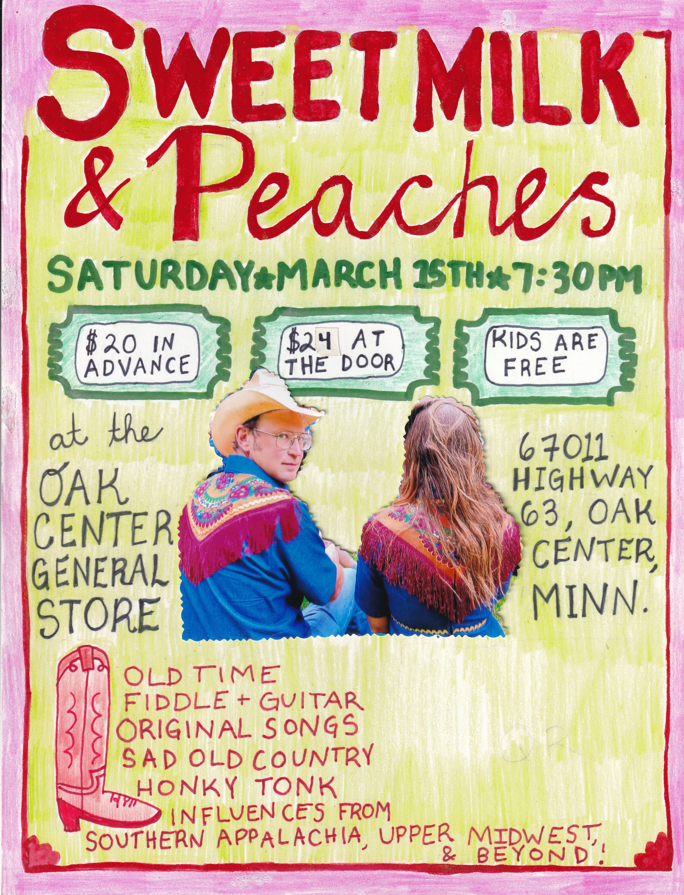

March 15
Oak Center General Store
Presents:
overview
The Talent
Sweet Milk & Peaches are a husband and wife duo (Jesse Downs and Liz Voz) from the Driftless Area in Wisconsin, where they play music and tend to their family and orchards.
Jesse and Liz play a mix of traditional old-time music, original songs, with melodies that reflect influences from the Upper Midwest to the Southern Appalachians and beyond. They write songs from the gut and pull musty tunes from the attic of the early 20th century and air them out in the 21st century air.
For the second set the duo will joined by friends, Davey Schmitz and Beau Sample, for a full band honky-tonk!
Ticketing
$20.00 online
$24.00 at the door
Agenda
- 6:30-7:00 Check in
- 7:00-7:30 Doors
- 7:30-8:15 First set
- 8:15-8:30 Intermission
- 8:30-9:30 Second set
Parking
Address: 67011 hwy 63, Lake City, MN 55041
NO PARKING ON SIDE OF ROAD. There will be volunteers to guide you to parking on the property
Accessability
The music venue itself is only accessed via staircase. The show will be played over speakers on the main floor for anyone who cannot or wishes not to go upstairs.
Tickets are required only for guests that go upstairs.
Concessions
Sorry, no alcohol will be served. We hope to get that back soon.
Other than that you can expect our usual lineup of popcorn, pop, cookies, etc.
Any questions?
phone: 651-448-0889
hopeschwen2299@gmail.com